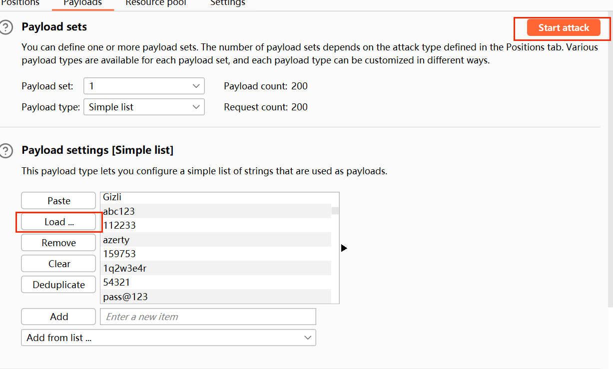
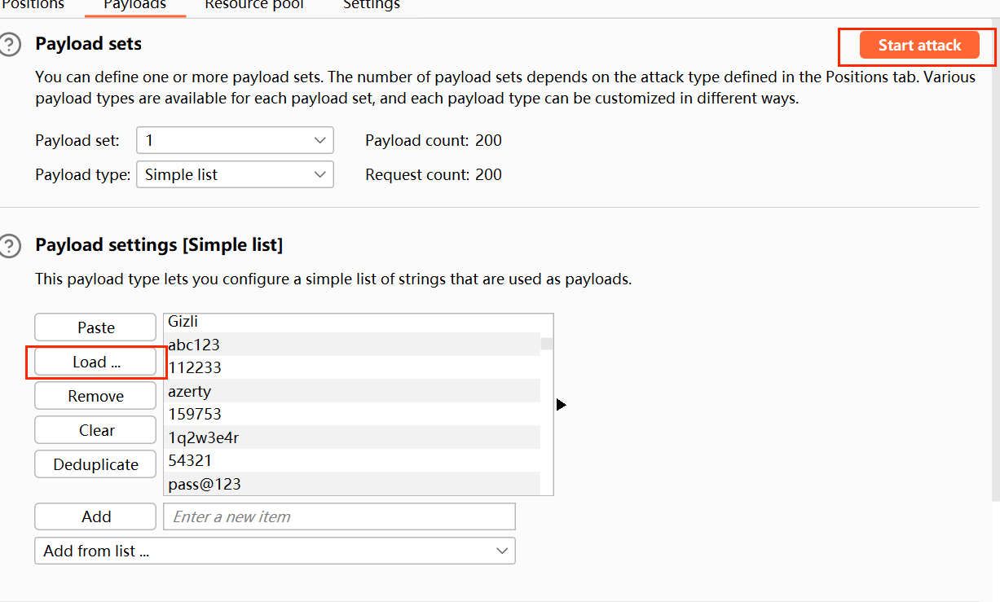

BurpSuit使用
前置基础知识
主页面模块
1.Dashboard(扫描与审计)
2.Target(目标)——显示目标目录结构的的一个功能
3.Proxy(代理)——拦截HTTP/S的代理服务器，作为在浏览器和目标应用程序之间的中间人，允许拦截、查看和修改在两个方向上的原始数据流。
4.Spider(爬虫)——自动爬取网站目录和内容。
5.Scanner(扫描器)——自动扫描web漏洞。
6.Intruder(入侵)——高度可配置的工具，可用作自动化攻击，如爆破密码、枚举目录、SQL 注入等。
7.Repeater(重放器)——手动操作修改重发某个单个请求。
8.Comparer（对比器）——对比两个请i去/响应的差异
9.Sequencer(会话)——用来分析那些不可预知的应用程序会话令牌和重要数据项的随机性的工具。
10.Decoder(解码器)——进行手动执行或对应用程序数据者智能解码编码的工具。
11.Comparer(对比)——通常是通过一些相关的请求和响应得到两项数据的一个可视化的“差异”。
12.Logger(日志记录器)——记录和审计所有经过 Burp Proxy 的 HTTP/HTTPS 流量
13.Extender(扩展)——安装插件扩展功能。
功能及具体使用
1.Proxy
proxy-intercept可以审计当前的请求，或者存储和发送到其他的页面进行其他的操作等
在其他地方导入其他的请求数据包
拦截当前数据包的 返回包，可以进行伪造验证等操作
对当前输入时候的对象进行urlcode编码，一些特殊的符号会自动转换成url编码
proxy—-http hitsory模块 记录请求日志功能
proxy—-options模块 监听配置
2.Intruder
将请求包发送到intruder
- Positions：设置请求中的参数及攻击类型
- Payloads：为上面的参数设置数据集、参数编码、加密等功能
- Resource Pool：指定请求线程及延时时间

- Sniper 使用一组数据集合，依次对 $ 标记的变量进行爆破，即：针对一个参数变量，使用一个数据集合
[使用场景：单一目标，已知用户名，密码未知] - Battering ram 使用一组数据集合，同时对 $ 标记的所有变量进行爆破，即：针对多个参数变量，使用一个数据集合
[使用场景：两个单一目标，相互不影响] - Pitchfork 使用多组数据集合，同时爆破被 $ 标记的变量，即：针对多个参数变量，使用多个数据集合
[使用场景：用户名和密码都未知，每个用户名只使用一个密码进行攻击] - Cluster bomb 使用多组数据集合进行组合（笛卡尔积）后，依次对多个爆破点变量进行爆破，即：针对多个变量，使用多个数据集合的组合
[使用场景：两个目标，每个用户名使用所有密码都进行一次攻击] 在 Positions 标签下，我们需要先点击右侧的「 Clear § 」按钮来清除默认的参数标签
然后鼠标选择需要设置为变量的值，点击右侧的「 Add § 」按钮来设置它为变量

导入字典，”start attact“进行暴破
在 Positions 标签下，我们需要先点击右侧的「 Clear § 」按钮来清除默认的参数标签
然后鼠标选择需要设置为变量的值，点击右侧的「 Add § 」按钮来设置它为变量

导入字典，”start attact“进行暴破
 正确的密码长度和其他稍有不同
正确的密码长度和其他稍有不同